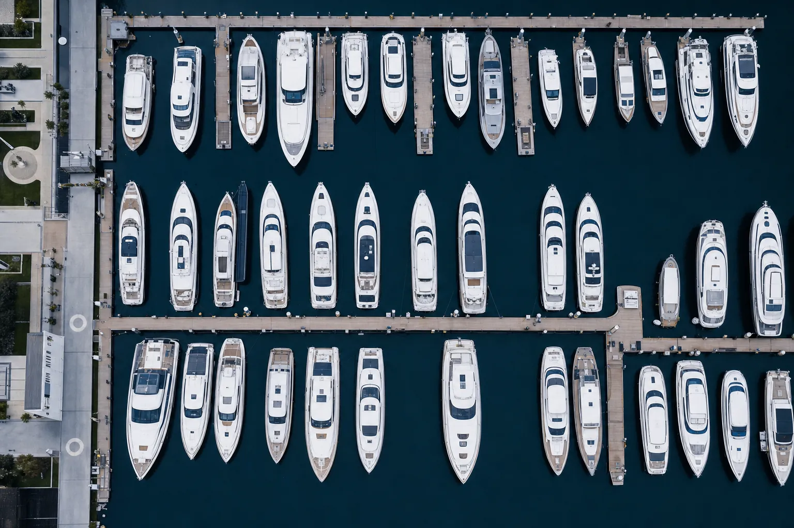

From the desk
Earnings season delivered the split-screen we expected. MarineMax posted a Q3 revenue miss and a record 35.7% gross margin, up 530 basis points, while confirming Blackstone, Donerail, and Centerbridge as its three final-round bidders. Brunswick beat on the top line, raised full-year guidance to $4.35–$4.75 in earnings per share on tariff refunds and mix, and now sits on $278M of second-quarter free cash flow. OneWater hit its below-four-times leverage target a quarter early on a 4% revenue decline.
The dealer channel is smaller, more premium, and dramatically more profitable — the volume tourists have left. Meanwhile the Mediterranean charter market is off 20–30% and The Italian Sea Group has filed for court-supervised insolvency, drawing a Sanlorenzo-backed consortium bid. Below: what the earnings tape and the Monaco run-up mean for your fourth-quarter book.
Featured story: Three bidders, one endgame
The MarineMax auction enters its final round
On 24 July, Reuters reported that Blackstone, Donerail, and Centerbridge Partners have advanced to the third and final round of bidding for MarineMax (NYSE: HZO), with Donerail’s raised all-cash offer of roughly $35 per share now benchmarking the process. Shares jumped 6.5% on the report to close near $36.41 (Tampa Bay Business Journal via ITA Yachts Canada). Blackstone’s interest reads through directly from its 2025 $5.65B Safe Harbor acquisition: MarineMax’s IGY Marinas and 65 owned marina and storage locations are the strategic prize (SuperYacht Times).
The 23 July third-quarter print made the case for a premium. Revenue of $611.3M missed consensus by roughly $71M, but gross margin expanded 530 basis points to a record 35.7%, adjusted EBITDA jumped 44% to $51.3M, and adjusted earnings per share surged to $0.81 from $0.05 (Yahoo Finance). Management reaffirmed full-year adjusted EBITDA of $110–125M and adjusted earnings per share of $0.40–$0.95, and disclosed that acquisitions since 2019 have added $700M of high-margin revenue across brokerage, finance and insurance, marinas, superyachts, and parts and service (Quartr). Inventory is down $118M year on year to $788.6M; cash stands at $174.8M (TradingView, on the 8-K). Bidders are buying a cleaner balance sheet, a higher-margin business mix, and a marina platform that behaves like a moat.

The read for dealers and brokers
Whoever wins, the model is validated: dealer economics survive a down cycle only if brokerage, service, marinas, and superyachts carry the profit and loss statement while new-boat volumes correct. Every MarineMax competitor now has to answer the same question in its own board deck — what is your non-new-boat gross-profit share, and where can it be next year?
Meanwhile, at the builder tier, The Italian Sea Group has filed for court-supervised insolvency, and a Sanlorenzo-led consortium operating as Polo Nautico Carrara has submitted a debt-free, going-concern bid for the Admiral, Tecnomar, and Perini Navi brands, with Azimut-Benetti also circling select assets (Reuters). The consolidation wave has crossed from dealer to builder.
Key takeaway
The Q2/Q3 earnings tape validates a two-track model: volumes down — MarineMax same-store sales −7%, OneWater −4%, industry retail −7.1% on a rolling twelve-month basis — but margins and cash flow up. That gap only widens for dealers heavy in brokerage, finance and insurance, marinas, and service. Independent operators still running a 2022-era new-boat-first model will find both financing and exit valuations increasingly hostile as the MarineMax comparable lands in the fourth quarter.
Economic indicators and risk
United States
- MarineMax Q3 revenue$611.3M · −7%
- MarineMax Q3 gross margin35.7% · +530 bps
- Brunswick Q2 net sales$1.558B · +8%
- Brunswick Q2 adjusted EPS$1.56 · +34%
- OneWater Q3 revenue$530.7M · −4%
- OneWater adjusted net leverage3.7×
- US new powerboat retail, rolling 12 months−7.1%
- US recreational marine spending, 2025$54B
Sources: Yahoo Finance on MarineMax, Investing.com on Brunswick, MarketBeat on OneWater, Marine Business World on association data, and Boating Industry Canada on NMMA spending.
Global
- Pre-owned yachts over 24m on market, 1 July2,157
- Combined asking value~$18.8B
- Edmiston H1 superyacht sales, by units−13%
- Edmiston H1 superyacht sales, by value−7%
- Mediterranean charter rates, year on year−20 to −30%
- Charter booking lead time118 → 83 days
- Monaco Yacht Show, 23–26 Sept~120 yachts
- US federal funds target, end July3.50–3.75%
Sources: 365 Yachts Market Intelligence, Edmiston’s Q2 market update, CNBC on Mediterranean charter, Lisbon by Boat on booking windows, and Boat International on the Monaco show.
Risk watch
United States
Florida brokerage inventory stood at 4,316 active listings on 24 July, with a median asking price of $349,995; the 100-foot-and-above segment carried a $7.4M median and roughly $61,600 per foot (Florida Yacht Market). Hurricane season is now in its peak window as the MarineMax sale decision approaches, and the consensus exit multiple resets industry-wide when that deal announces.
Global
EU27 diesel reached €1.929 per litre on 16 July, up about 18% against the February baseline (Logifie), and marine gasoil in the Amsterdam-Rotterdam-Antwerp hub is up 73.5% since February on tight supply (Argus Media). Strait of Hormuz war-risk premiums are running at 5–10% of hull value (S&P Global), the London Joint War Committee widened its Red Sea high-risk zone on 29 July (Reuters), and Bab el-Mandeb premiums have doubled to above 1% (Reuters).
Three action steps
Run the MarineMax playbook on your own P&L before year-end.
MarineMax did not beat because boats sold — same-store sales were down 7%. It beat because brokerage, finance and insurance, marinas, superyachts, and parts and service now carry the gross profit. Break out your last-twelve-month gross profit by revenue line and mark the non-new-boat share. If it is below 40%, you are running a 2022 business model in a 2026 market. Set a written fiscal 2027 target — the multiple your business is worth in a sale conversation will move with that ratio far more than with unit volume.
Move charter cross-currency exposure to the front of the risk register.
With EU diesel back at €1.93 a litre and marine gasoil up 73.5% since February, a Mediterranean charter contract priced in euros against a dollar-denominated cost book — provisioning, US-based crew payroll, delivery voyage fuel — is now materially different from what your advance provisioning allowance assumed in April. Requote every August to October Mediterranean charter with a fresh fuel assumption, a currency buffer of 300–500 basis points, and an explicit clause for Red Sea and Hormuz war-risk surcharge pass-through. Owners will accept honest math; they will not accept surprise overruns.
Book Monaco with a builder-services agenda, not a boat-shopping agenda.
The Monaco Yacht Show runs 23–26 September, with roughly 120 yachts and 43 new deliveries expected — but the real story on the pontoons will be builder distress. With The Italian Sea Group in insolvency proceedings and a Sanlorenzo-led consortium bidding, refit, warranty, and completion questions will drive more meaningful conversations than new orders. Come with a list: which builders have open orders on which of your clients’ hulls, which yards carry credible completion risk, and which service providers you can extend a preferred-vendor relationship to before demand snaps back. The best Monaco value this year is in the yards, not the demo boats.
Industry player profile: Brunswick Corporation
The propulsion, parts, and Freedom Boat Club engine that keeps printing through the volume trough.
Headquartered in Mettawa, Illinois, Brunswick (NYSE: BC) is the world’s largest marine-recreation manufacturer — Mercury Marine propulsion, Boston Whaler, Sea Ray, Bayliner, Lund, and Harris boats, Navico Group electronics, plus the Freedom Boat Club shared-access platform. On 30 July the company reported second-quarter net sales of $1.558B, up 8%, adjusted operating earnings of $150.1M, up 19%, adjusted earnings per share of $1.56, up 34%, and quarterly free cash flow of $278M at better than 250% conversion (Investing.com). All four segments grew year on year for the fourth consecutive quarter: Propulsion $644M (+8%), Engine Parts and Accessories $367.9M (+9%) at a 23.3% operating margin, Navico $215.8M (+7%), and Boat $424.4M (+5%) (Stock Titan, on the 8-K).
Why it matters now
Brunswick raised its full-year guide to $5.7–5.8B in revenue, roughly 8% operating margin, $4.35–$4.75 in adjusted earnings per share, and more than $400M of free cash flow (Brunswick investor relations). Roughly $0.30 of the raise reflects Phase 2 tariff refunds — a $30.4M cost-of-sales credit plus a $24.6M state tax benefit — and the other $0.20 is operational. Freedom Boat Club reached its 450th location in June, converting new-boat volume softness into recurring membership economics. Brunswick is a real-time barometer of the marine channel: parts and accessories signal what fleets are actually running, propulsion signals original-equipment confidence, and Freedom signals what happens to would-be first-time buyers when new-boat affordability breaks.
Watch for
A third-quarter guide of $1.4–1.5B in revenue and $1.20–$1.40 in adjusted earnings per share, about a 15% top-line step-down against the second quarter and in line with normal seasonality; the trajectory of Navico’s autonomy and lower-cost sensor stack; and whether Freedom Boat Club’s international footprint, now well over 100 non-US clubs, keeps outpacing its US comparables.
Voices from the field
This section runs reader-submitted outlooks from brokers, dealers, builders, captains, and supply-chain partners. Second-quarter earnings from MarineMax, Brunswick, and OneWater confirmed the two-track market — record margins on shrinking volumes — but the on-the-water colour is where the next-quarter shift usually shows up first.
Send us what you are seeing on the Monaco run-in, on used inventory absorption, on charter reprice negotiations, and on refit-yard capacity. One quote per issue gets the lead position, and we run through October.
Sources cited inline with links. Data as of late July / early August 2026. Helm & Horizon is published by The Walton Group, Inc. and is not investment advice.